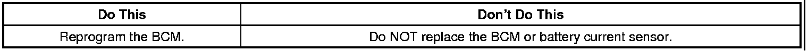
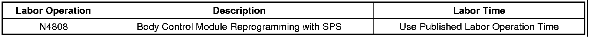

Electrical - Low Battery Voltage/Warning Lamp/ DTC B1516
TECHNICALBulletin No.: 06-06-03-013D
Date: September 30, 2009
Subject: Intermittent Low Battery Voltage, Engine Will Not Crank, Engine Cranks But Will Not Start, Charging System Light On, Service Battery Charging System Message Displayed, Headlamp Flicker or Dimming, DTC B1516 Set (Reprogram BCM)
Models:
2007 Cadillac Escalade Models
2007 Chevrolet Avalanche, Silverado, Suburban, Tahoe
2007 GMC Sierra, Yukon Models
1500 and 2500 Series Vehicles Only
Assembly Plants Breakpoint for Changed Calibration from February 5, 2007 through February 9, 2007
Supercede:
This bulletin is being revised to add additional symptoms. Please discard Corporate Bulletin Number 06-06-03-013C (Section 06 - Engine/Propulsion System).

Condition
Some customers may comment of one or more of the following conditions:
- Charging system light on.
- Service battery charging system message displayed.
- Intermittent low battery voltage.
- Vehicle will not crank.
- Vehicle cranks but will not start.
- Diagnostic Trouble Code (DTC) B1516 - Battery Current Sensor Performance Signal Invalid.
- Headlamp flicker or dimming.
Cause
This condition may be caused by the Body Control Module (BCM) calibrations that create a lower battery state of charge than intended in low electrical power usage modes.
Correction
Important
Verify that the 12-volt battery has a battery charge of 12 to 16 volts. The battery must be able to maintain a charge during programming. Only use approved Midtronics 165-PCS charger or equivalent to maintain proper battery voltage during programming. The J2534 MDI will reprogram the modules in less time than the Tech 2(R) scan tool.
A revised calibration has been developed to address these conditions. Technicians are to reprogram the BCM using the latest software available on TIS2WEB. Refer to the Body Control Module Programming and Setup procedure in SI.
Warranty Information

For vehicles repaired under warranty, use the table above.

Disclaimer